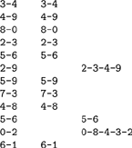
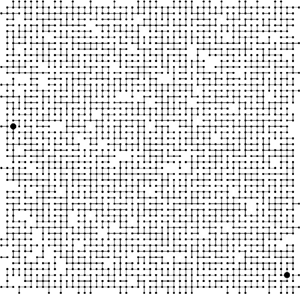

C++ Programming Robert Sedgewick - Princeton University Addison Wesley Professional Algorithms in C++, Parts 1–4: Fundamentals, Data Structure, Sorting, Searching, Third Edition C++ Programming Robert Sedgewick - Princeton University Addison Wesley Professional Algorithms in C++, Parts 1–4: Fundamentals, Data Structure, Sorting, Searching, Third Edition
1.2. A Sample Problem: Connectivity
Suppose that we are given a sequence of pairs of integers, where each integer represents an object of some type and we are to interpret the pair p-q as meaning "p is connected to q." We assume the relation "is connected to" to be transitive: If p is connected to q, and q is connected to r, then p is connected to r. Our goal is to write a program to filter out extraneous pairs from the set: When the program inputs a pair p-q, it should output the pair only if the pairs it has seen to that point do not imply that p is connected to q. If the previous pairs do imply that p is connected to q, then the program should ignore p-q and should proceed to input the next pair. Figure 1.1 gives an example of this process.
Given a sequence of pairs of integers representing connections between objects (left), the task of a connectivity algorithm is to output those pairs that provide new connections (center). For example, the pair 2-9 is not part of the output because the connection 2-3-4-9 is implied by previous connections (this evidence is shown at right).

Our problem is to devise a program that can remember sufficient information about the pairs it has seen to be able to decide whether or not a new pair of objects is connected. Informally, we refer to the task of designing such a method as the connectivity problem. This problem arises in a number of important applications. We briefly consider three examples here to indicate the fundamental nature of the problem.
For example, the integers might represent computers in a large network, and the pairs might represent connections in the network. Then, our program might be used to determine whether we need to establish a new direct connection for p and q to be able to communicate, or whether we could use existing connections to set up a communications path. In this kind of application, we might need to process millions of points and billions of connections, or more. As we shall see, it would be impossible to solve the problem for such an application without an efficient algorithm.
Similarly, the integers might represent contact points in an electrical network, and the pairs might represent wires connecting the points. In this case, we could use our program to find a way to connect all the points without any extraneous connections, if that is possible. There is no guarantee that the edges in the list will suffice to connect all the points—indeed, we shall soon see that determining whether or not they will could be a prime application of our program.
Figure 1.2 illustrates these two types of applications in a larger example. Examination of this figure gives us an appreciation for the difficulty of the connectivity problem: How can we arrange to tell quickly whether any given two points in such a network are connected?
The objects in a connectivity problem might represent connection points, and the pairs might be connections between them, as indicated in this idealized example that might represent wires connecting buildings in a city or components on a computer chip. This graphical representation makes it possible for a human to spot nodes that are not connected, but the algorithm has to work with only the pairs of integers that it is given. Are the two nodes marked with the large black dots connected?

Still another example arises in certain programming environments where it is possible to declare two variable names as equivalent. The problem is to be able to determine whether two given names are equivalent, after a sequence of such declarations. This application is an early one that motivated the development of several of the algorithms that we are about to consider. It directly relates our problem to a simple abstraction that provides us with a way to make our algorithms useful for a wide variety of applications, as we shall see.
Applications such as the variable-name–equivalence problem described in the previous paragraph require that we associate an integer with each distinct variable name. This association is also implicit in the network-connection and circuit-connection applications that we have described. We shall be considering a host of algorithms in Chapters 10 through 16 that can provide this association in an efficient manner. Thus, we can assume in this chapter, without loss of generality, that we have N objects with integer names, from 0 to N – 1.
We are asking for a program that does a specific and well-defined task. There are many other related problems that we might want to have solved, as well. One of the first tasks that we face in developing an algorithm is to be sure that we have specified the problem in a reasonable manner. The more we require of an algorithm, the more time and space we may expect it to need to finish the task. It is impossible to quantify this relationship a priori, and we often modify a problem specification on finding that it is difficult or expensive to solve, or, in happy circumstances, on finding that an algorithm can provide information more useful than was called for in the original specification.
For example, our connectivity-problem specification requires only that our program somehow know whether or not any given pair p-q is connected, and not that it be able to demonstrate any or all ways to connect that pair. Adding a requirement for such a specification makes the problem more difficult, and would lead us to a different family of algorithms, which we consider briefly in Chapter 5 and in detail in Part 7.
The specifications mentioned in the previous paragraph ask us for more information than our original one did; we could also ask for less information. For example, we might simply want to be able to answer the question: "Are the M connections sufficient to connect together all N objects?" This problem illustrates that, to develop efficient algorithms, we often need to do high-level reasoning about the abstract objects that we are processing. In this case, a fundamental result from graph theory implies that all N objects are connected if and only if the number of pairs output by the connectivity algorithm is precisely N – 1 (see Section 5.4). In other words, a connectivity algorithm will never output more than N – 1 pairs, because, once it has output N – 1 pairs, any pair that it encounters from that point on will be connected. Accordingly, we can get a program that answers the yes–no question just posed by changing a program that solves the connectivity problem to one that increments a counter, rather than writing out each pair that was not previously connected, answering "yes" when the counter reaches N – 1 and "no" if it never does. This question is but one example of a host of questions that we might wish to answer regarding connectivity. The set of pairs in the input is called a graph, and the set of pairs output is called a spanning tree for that graph, which connects all the objects. We consider properties of graphs, spanning trees, and all manner of related algorithms in Part 7.
It is worthwhile to try to identify the fundamental operations that we will be performing, and so to make any algorithm that we develop for the connectivity task useful for a variety of similar tasks. Specifically, each time that we get a new pair, we have first to determine whether it represents a new connection, then to incorporate the information that the connection has been seen into its understanding about the connectivity of the objects such that it can check connections to be seen in the future. We encapsulate these two tasks as abstract operations by considering the integer input values to represent elements in abstract sets, and then design algorithms and data structures that can
Organizing our algorithms in terms of these abstract operations does not seem to foreclose any options in solving the connectivity problem, and the operations may be useful for solving other problems. Developing ever more powerful layers of abstraction is an essential process in computer science in general and in algorithm design in particular, and we shall turn to it on numerous occasions throughout this book. In this chapter, we use abstract thinking in an informal way to guide us in designing programs to solve the connectivity problem; in Chapter 4, we shall see how to encapsulate abstractions in C++ code.
The connectivity problem is easily solved in terms of the find and union abstract operations. After reading a new pair p-q from the input, we perform a find operation for each member of the pair. If the members of the pair are in the same set, we move on to the next pair; if they are not, we do a union operation and write out the pair. The sets represent connected components: subsets of the objects with the property that any two objects in a given component are connected. This approach reduces the development of an algorithmic solution for connectivity to the tasks of defining a data structure representing the sets and developing union and find algorithms that efficiently use that data structure.
There are many possible ways to represent and process abstract sets, which we consider in more detail in Chapter 4. In this chapter, our focus is on finding a representation that can support efficiently the union and find operations that we see in solving the connectivity problem.
Exercises | 1.1 Give the output that a connectivity algorithm should produce when given the input 0-2, 1-4, 2-5, 3-6, 0-4, 6-0, and 1-3. | | 1.2 List all the different ways to connect two different objects for the example in Figure 1.1. | | 1.3 Describe a simple method for counting the number of sets remaining after using the union and find operations to solve the connectivity problem as described in the text. |
|